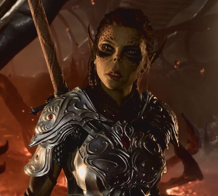

STR: 17 | DEX: 13 | CON: 15 | INT: 10 | WIS:12 | CHA: 8
Lae'Zel is a Githyanki Fighter and a great addition to your party as a martial class with high DPS and possible Tanking. You can start the questline "The Githyanki Warrior" for Lae'Zel's personal backstory. Lae'zel is a consummate warrior, ferocious even by the standards of a githyanki creche. Faced with transforming into the very monster she has sworn to destroy, Lae'Zel must prove herself worthy of rejoining her people - if they do not execute her first. She is first met very early on your playthrough: You'll find her for the first time during the Prologue aboard the Nautiloid.